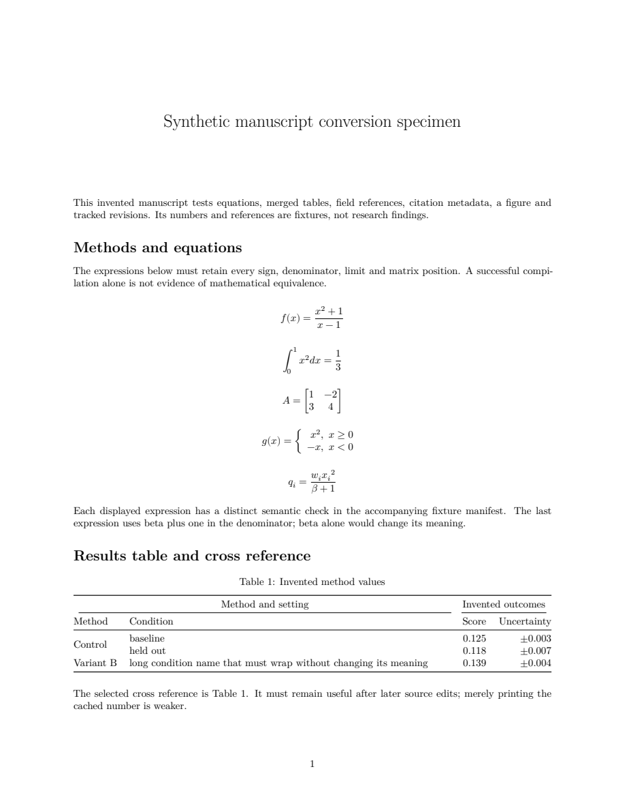

Word to LaTeX: check the document after it changes
Free Pandoc preserved all five equations in our test manuscript. Review found a subtler defect: inserting a table updated the caption, while a cross-reference still pointed to the old number.
This small example shows the source, the free conversion and a reviewed repair. Download it, reproduce the conversion, and use the checks on your own manuscript. All research content, values and citations in the sample are invented.
Download the complete exampleRead the reviewed PDFZIP includes the Word source, free-conversion source/PDF, reviewed source/PDF, figure, bibliography, commands and verification evidence. No executables or TeX cache. No upload, account or purchase required.
What happened in this example
| Content | Configured free conversion | Reviewed result |
|---|---|---|
| Five native Word equations | All five preserved | Same math source; each expression visually checked |
| Merged table and its numbers | Values/grouping retained; layout warning | Table rebuilt with the same values and grouping |
| Structured citation | Bibliography exported by Pandoc | Free export retained |
| Typed citation without metadata | Literal text retained | No bibliographic details invented |
| Captions | Cached number duplicated by LaTeX numbering | Redundant caption prefixes removed |
| Table cross-reference | Clickable, but its displayed number was cached | Live LaTeX reference |
| Tracked edits / text box | Selected accepted text and text-box note retained | Same explicit revision policy |
The initial raw conversion was three pages; bibliography export and explicit margins produced the stronger two-page baseline above. The reviewed output is also two pages. This one case does not measure general converter accuracy.
The useful test: insert a preceding table
A PDF can look correct today and contain references that break during editing. We compiled isolated copies after inserting another table before the one being cited.
Free configuration
Actual target caption: Table 2
Cross-reference still displayed: Table 1
Compilation succeeded. Successful compilation did not detect the stale number.
Reviewed source
Actual target caption: Table 2
Cross-reference displayed: Table 2
The reference followed the target when its position changed.
% Free conversion of the cached Word field:
\hyperref[TableResults]{1}
% Repair for this known target:
\ref{TableResults}Check the target label before making this change. It is a repair for an identified field, not a rule to replace every number in a document.
Reproduce the free baseline
The download includes exact commands for the stronger baseline using Pandoc 3.11 and Tectonic 0.17.0. The tools are free and obtained separately from their official releases. See the Pandoc manual for conversion options.
For the included reviewed packet, enter its folder and compile:
tectonic --untrusted --keep-logs --keep-intermediates manuscript.texA first Tectonic run may download TeX dependencies. This example uses XeTeX via Tectonic. Confirm the required engine and template for your actual publisher before choosing a build.
A practical review sequence
- Keep the original document and choose how to handle tracked changes. This example accepts them.
- Compare every equation, table value, grouping, citation and extracted image with the source.
- Inspect all rendered pages, including long captions, table widths and symbols.
- Insert or move a table/figure in a copy. Check that references update with their targets.
- Compile using the actual submission template and engine, then have the author approve scientific meaning and the final proof.
Preview of the reviewed synthetic manuscript

Eleven focused checks passed, including the inserted-table comparison; all pages of the raw, configured and reviewed PDFs were inspected. The original Word file was not rendered in Word or LibreOffice, so original layout equivalence is unverified. No actual journal template, pdfLaTeX acceptance, accessibility certification, customer time saving or general equation-conversion accuracy is established. The compiler retained a Fontconfig configuration warning; the reviewed PDF was readable and its TeX log had no detected layout, undefined-reference or missing-character warnings.